画像分析
画像解析機能は、人物、動物、オブジェクト、風景、アクションなどの画像の内容に関連するタグを生成します。
この機能は、画像認識ツールであるAzure Cognitive Servicesに依存しています。Sitecore DAM はこれを統合して、アセットの自動タグ、説明、色認識データ（画像とベクトルのみ）を生成します。
以下のワークフローは、Sitecore DAM での画像解析の流れを表しています。

アセット詳細ページの画像解析の項目を見ることができます。
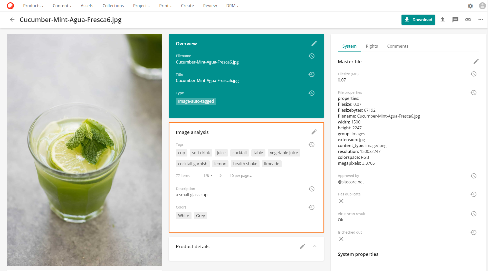
Vision メディア処理フローは、画像解析機能を処理します。フローは、管理 > メディア処理にあります。
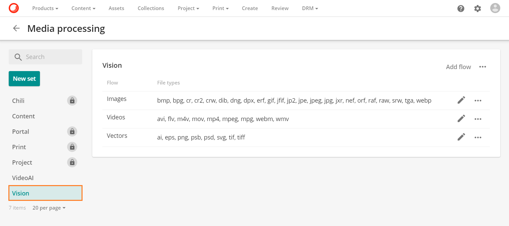
画像解析機能は以下のファイルタイプをサポートしています。
- 画像: bmp, bpg, cr, cr2, crw, dib, dng, dpx, erf, gif, jfif, jp2, jpe, jpeg, jpg, jxr, nef, orf, raf, raw, srw, tga, webp
- ベクター: ai、eps、png、psb、psd、svg、tif、tiff
Note
画像解析機能では、動画アセットには独自の流れがあるため、処理はしません。ビデオAI解析を行います。
画像解析の設定
画像解析を設定するには
Warning
スーパーユーザのみが、このセクションで説明されている設定手順を実行できます。
M.AssetType タクソノミーを設定する
画像解析機能は、特定のアセット タイプを持つアセットにのみ適用されます。M.AssetType タクソノミー を設定することで、画像解析機能を起動するアセット タイプを選択できます。既存のアセット タイプを選択するか、新しいアセット タイプを作成できます。
新しいアセット タイプを M.AssetType タクソノミーに追加するには、次の手順に従います。
- 管理 > タクソノミー に移動します。

- M.AssetTypeタクソノミーを検索して選択します。

 をクリックすると、M.AssetTypeタクソノミーの新しい項目が追加されます。
をクリックすると、M.AssetTypeタクソノミーの新しい項目が追加されます。
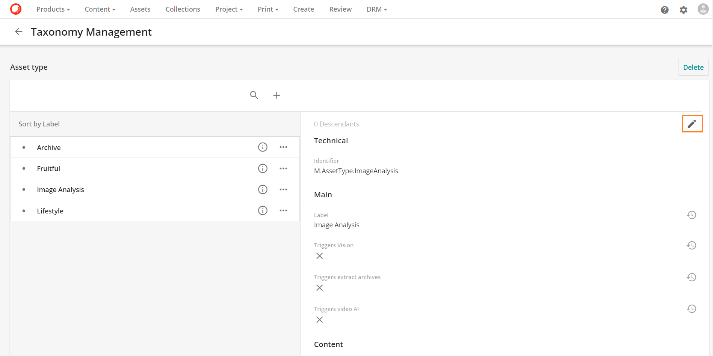
- ラベルを入力します。この例では、ラベルは Image Analysis です。識別子は自動生成されます。
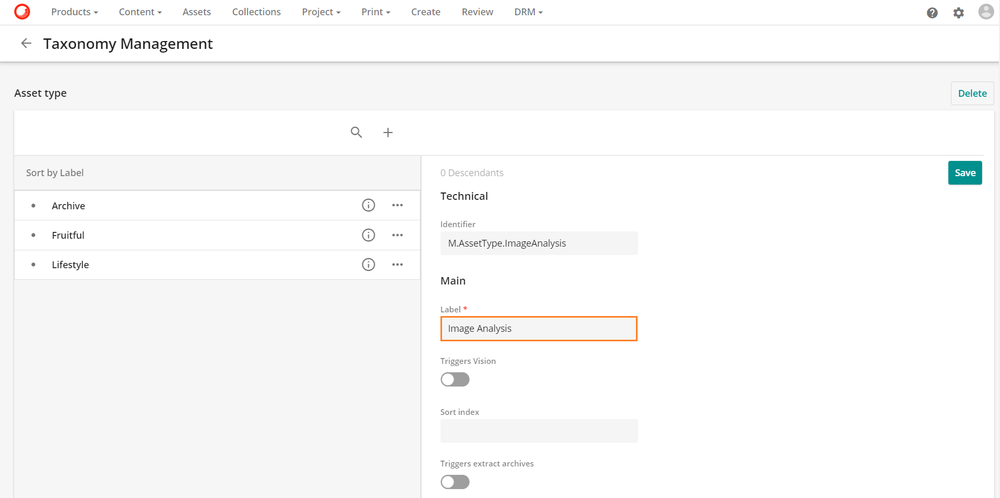
- 保存 をクリックします。
Vision サービスを有効にする
画像解析のトリガーとなるアセットタイプを特定したら、関連するタクソノミー項目でVisionサービスを有効にする必要があります。
M.AssetType タクソノミー項目で Vision サービスを有効にするには、次の手順に従います。
管理 > タクソノミーに移動します。
M.AssetType タクソノミーを検索して選択します。
構成する必要のあるタクソノミー項目を見つけ、 をクリックして編集します。
- Triggers visionをTrueに設定します。
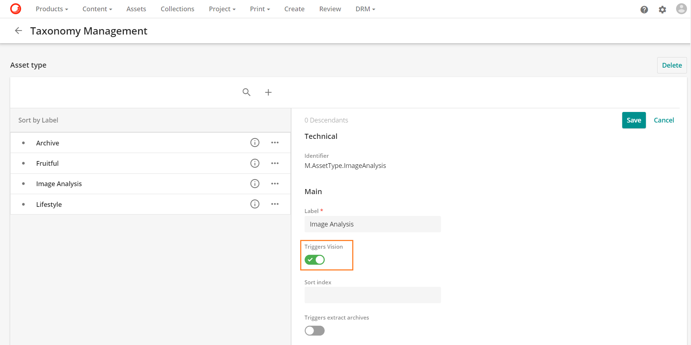
Tip
画像の類似性機能を使用する場合は、同じページの「コグニティブ」の下にある「トリガー画像の類似性」フィールドを有効にしてください。
- 保存をクリックします。
画像分析の適用
アセットに画像解析を適用するには、トリガービジョンを有効にしたアセットタイプをアセットに割り当てる必要があります。
これを使用するようにアセットを設定するには、いくつかの方法があります。
1つのアセットに画像解析を適用
- アセットの詳細ページに移動して、アセットの詳細ページで編集アイコン をクリックします。
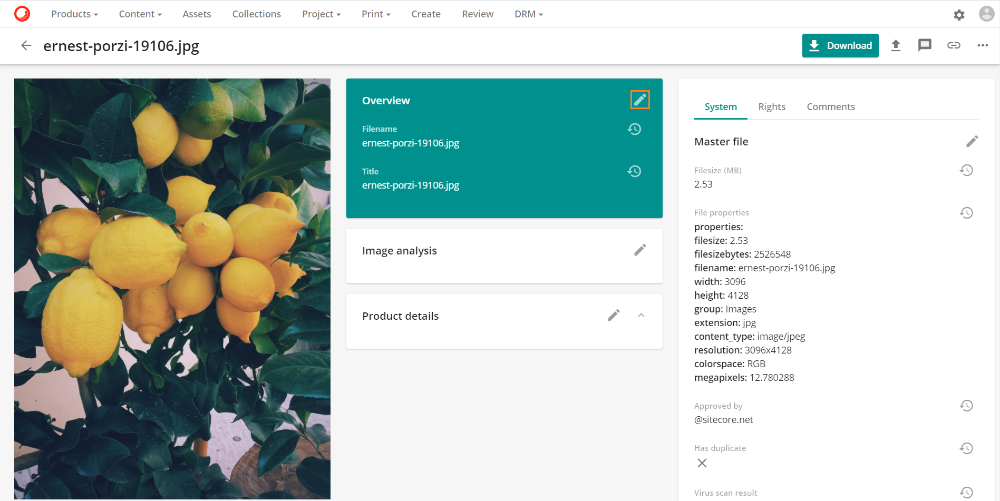
- タイプフィールドで、編集タイプボタン
 をクリックします。
をクリックします。

- トリガービジョンを有効にしたアセットタイプを選択し、OKをクリックします。
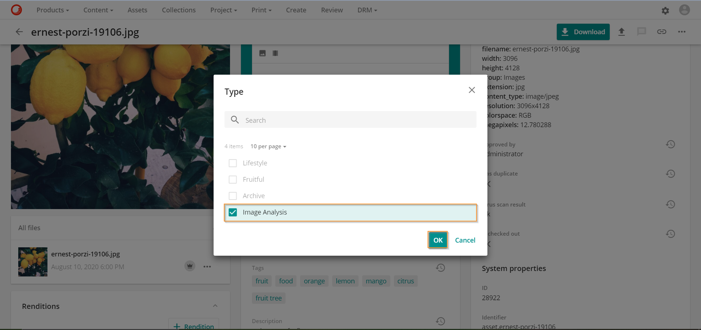
- 概要に戻り、保存をクリックします。
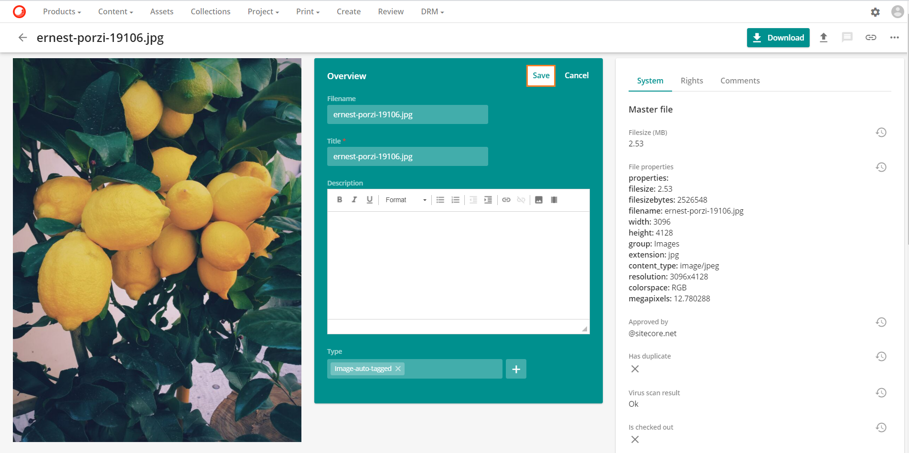
- 保存後、あなたのアセットはAzure Cognitive Servicesによって分析されます。これは、バックグラウンドプロセスページにあるジョブの詳細で確認できます。

- 結果は、アセット詳細ページの画像解析セクションで確認できます。
テーブル内の編集を使用して画像解析を適用する
- アセットページでアセットを選択し、
 アイコンをクリックします。編集可能なテーブルが表示されます。
アイコンをクリックします。編集可能なテーブルが表示されます。

- 最初のアセットの Type セルをダブルクリックし、Triggers ビジョンを有効にしたアセットタイプを選択し、OK をクリックします。
- 緑のボックスをドラッグして、残りのアセットのTypeセルを埋めます。

保存をクリックして閉じます。
保存後、アセットはAzure Cognitive Servicesによって分析されます。結果は、アセットの詳細ページの画像解析セクションで確認できます。
マス編集を使用して画像解析を適用する
- アセット ページでアセットを選択し、 をクリックし、編集を選択してアセットを一括編集します。

- アセット一括編集画面で、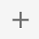 をクリックして、Typeフィールドを更新します。

- トリガーズビジョンを有効にしたアセットタイプを選択し、OKをクリックします。
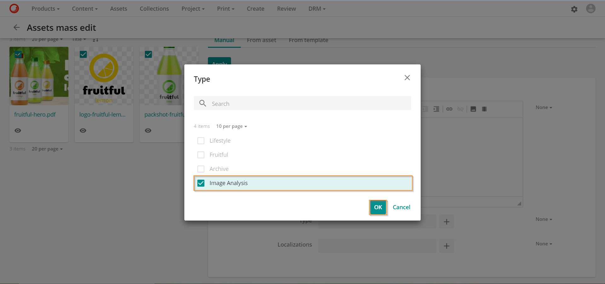
- 新しいアセット タイプは、既存の値を置き換えるようにデフォルトで設定されています。適用をクリックして変更を保存します。
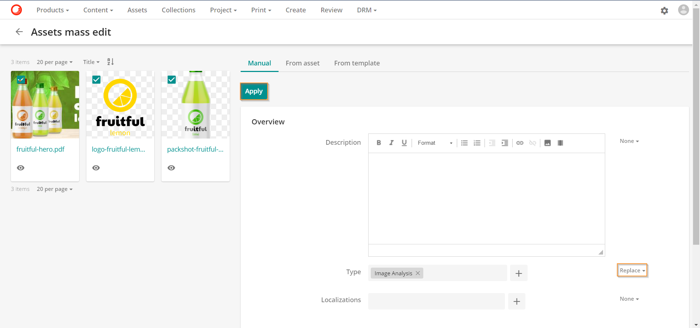
- 変更内容を確認するには、確認をクリックします。
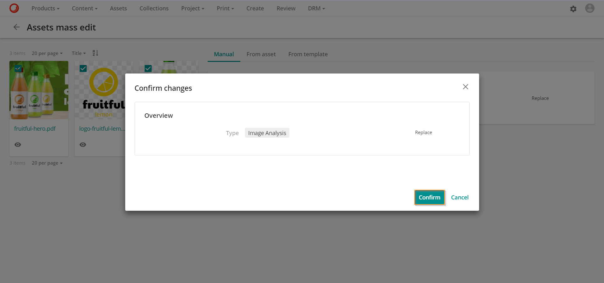
- 保存後、アセットはAzure Cognitive Servicesによって分析されます。結果は、アセット詳細ページの画像解析セクションで確認できます。